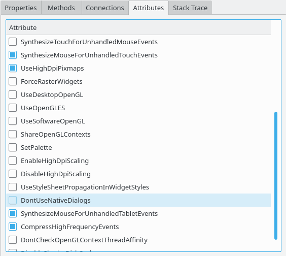

Qt3D Geometry Inspector HTTP Cookies
The application attribute inspection tab allows you to see and toggle QCoreApplication attributes (see Qt::ApplicationAttribute). This is available when selecting a QCoreApplication instance in e.g. the Object Browser.
